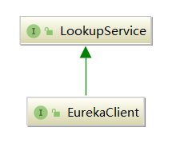
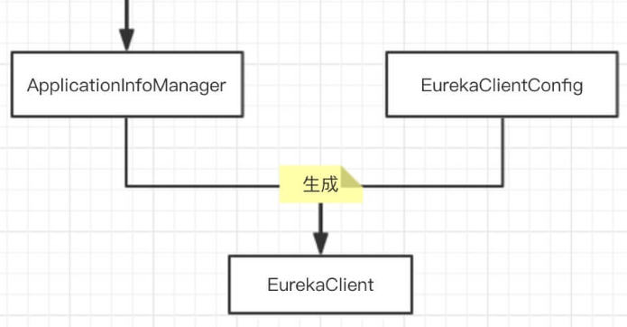

Eureka-Server注册中心启动时，会构造一个EurakaClient对象：
eurekaClient = new DiscoveryClient(applicationInfoManager, eurekaClientConfig);
EurakaClient对象的主要作用如下：
com.netflix.discovery.shared.Applications) 和 应用实例( com.netflix.appinfo.InstanceInfo )；com.netflix.appinfo.ApplicationInfoManager )和 Eureka-Client 配置( com.netflix.discovery.EurekaClientConfig )；
LookupService，顾名思义，是查找服务，这个接口提供了一些简单单一的方式获取应用集合(
com.netflix.discovery.shared.Applications) 和 应用实例信息(com.netflix.appinfo.InstanceInfo)。
DiscoveryClient是EurakaClient的具体实现，用于与 Eureka-Server 交互，它在构造时需要ApplicationInfoManager对象和EurekaClientConfig对象：

DiscoveryClient提供了如下功能：
DiscoveryClient对象的构造最终是调用了如下构造器，大家可以先顺着我的注释了解整个流程：
// Applications 在Eureka-Client本地的缓存
private final AtomicReference<Applications> localRegionApps = new AtomicReference<Applications>();
// 拉取注册表次数
private final AtomicLong fetchRegistryGeneration;
// 最后一次成功拉取注册表的时间戳
private volatile long lastSuccessfulRegistryFetchTimestamp = -1;
// 最后一次成功发送心跳（续约）的时间戳
private volatile long lastSuccessfulHeartbeatTimestamp = -1;
// 心跳（续约）的监控
private final ThresholdLevelsMetric heartbeatStalenessMonitor;
// 注册表拉取的监控
private final ThresholdLevelsMetric registryStalenessMonitor;
DiscoveryClient(ApplicationInfoManager applicationInfoManager, EurekaClientConfig config, AbstractDiscoveryClientOptionalArgs args, Provider<BackupRegistry> backupRegistryProvider) {
// 注：BackupRegistry是备份注册表接口，没有具体实现；
// AbstractDiscoveryClientOptionalArgs是可选参数抽象基类，这两个都可以忽略
// 1.设置各种健康检查处理器、监听器
if (args != null) {
this.healthCheckHandlerProvider = args.healthCheckHandlerProvider;
this.healthCheckCallbackProvider = args.healthCheckCallbackProvider;
// Eureka 事件监听器
this.eventListeners.addAll(args.getEventListeners());
this.preRegistrationHandler = args.preRegistrationHandler;
} else {
this.healthCheckCallbackProvider = null;
this.healthCheckHandlerProvider = null;
this.preRegistrationHandler = null;
}
// 2.将ApplicationInfoManager、EurekaClientConfig、InstanceInfo保存到自身的字段中
this.applicationInfoManager = applicationInfoManager;
InstanceInfo myInfo = applicationInfoManager.getInfo();
clientConfig = config;
staticClientConfig = clientConfig;
transportConfig = config.getTransportConfig();
// 设置当前应用实例对象
instanceInfo = myInfo;
if (myInfo != null) {
// 无实际用途，用于打印logger
appPathIdentifier = instanceInfo.getAppName() + "/" + instanceInfo.getId();
} else {
logger.warn("Setting instanceInfo to a passed in null value");
}
// 设置备份注册表，目前没有默认实现，忽略
this.backupRegistryProvider = backupRegistryProvider;
this.urlRandomizer = new EndpointUtils.InstanceInfoBasedUrlRandomizer(instanceInfo);
// 3.设置Applications在本地的缓存，后续定时任务间隔从 Eureka-Server 拉取注册实例信息到本地缓存
localRegionApps.set(new Applications());
// 拉取注册表的次数
fetchRegistryGeneration = new AtomicLong(0);
// 获取哪些区域( Region )集合的注册信息
remoteRegionsToFetch = new AtomicReference<String>(clientConfig.fetchRegistryForRemoteRegions());
// 获取哪些区域( Region )集合的注册信息
remoteRegionsRef = new AtomicReference<>(remoteRegionsToFetch.get() == null ? null : remoteRegionsToFetch.get().split(","));
// 4.设置是否拉取注册表
if (config.shouldFetchRegistry()) {
this.registryStalenessMonitor = new ThresholdLevelsMetric(this, METRIC_REGISTRY_PREFIX + "lastUpdateSec_", new long[]{15L, 30L, 60L, 120L, 240L, 480L});
} else {
this.registryStalenessMonitor = ThresholdLevelsMetric.NO_OP_METRIC;
}
// 5.设置是否向注册中心注册自身
if (config.shouldRegisterWithEureka()) {
this.heartbeatStalenessMonitor = new ThresholdLevelsMetric(this, METRIC_REGISTRATION_PREFIX + "lastHeartbeatSec_", new long[]{15L, 30L, 60L, 120L, 240L, 480L});
} else {
this.heartbeatStalenessMonitor = ThresholdLevelsMetric.NO_OP_METRIC;
}
logger.info("Initializing Eureka in region {}", clientConfig.getRegion());
// 6.如果当前应用实例是单体部署，也就是既不向注册中心注册，也不拉取注册表
if (!config.shouldRegisterWithEureka() && !config.shouldFetchRegistry()) {
logger.info("Client configured to neither register nor query for data.");
scheduler = null;
heartbeatExecutor = null;
cacheRefreshExecutor = null;
eurekaTransport = null;
instanceRegionChecker = new InstanceRegionChecker(new PropertyBasedAzToRegionMapper(config), clientConfig.getRegion());
// This is a bit of hack to allow for existing code using DiscoveryManager.getInstance()
// to work with DI'd DiscoveryClient
DiscoveryManager.getInstance().setDiscoveryClient(this);
DiscoveryManager.getInstance().setEurekaClientConfig(config);
initTimestampMs = System.currentTimeMillis();
logger.info("Discovery Client initialized at timestamp {} with initial instances count: {}",
initTimestampMs, this.getApplications().size());
// 直接返回，不需要启动任何调度任务
return;
}
try {
// 7.创建一个支持定时调度任务的线程池
scheduler = Executors.newScheduledThreadPool(2,
new ThreadFactoryBuilder()
.setNameFormat("DiscoveryClient-%d")
.setDaemon(true)
.build());
// 8.创建一个用于发送心跳（续约）的线程池，注意这里用了SynchronousQueue，且keepAliveTime=0，
// 那么当线程数量达到maxsize时，由于SynchronousQueue没有空间，所以非核心线程会直接退出
heartbeatExecutor = new ThreadPoolExecutor(
1, clientConfig.getHeartbeatExecutorThreadPoolSize(), 0, TimeUnit.SECONDS,
new SynchronousQueue<Runnable>(),
new ThreadFactoryBuilder()
.setNameFormat("DiscoveryClient-HeartbeatExecutor-%d")
.setDaemon(true)
.build()
);
// 9.创建一个支持本地注册表缓存刷新的线程池
cacheRefreshExecutor = new ThreadPoolExecutor(
1, clientConfig.getCacheRefreshExecutorThreadPoolSize(), 0, TimeUnit.SECONDS,
new SynchronousQueue<Runnable>(),
new ThreadFactoryBuilder()
.setNameFormat("DiscoveryClient-CacheRefreshExecutor-%d")
.setDaemon(true)
.build()
);
// 10.创建一个支持eureka client跟eureka server进行网络通信的底层组件
eurekaTransport = new EurekaTransport();
scheduleServerEndpointTask(eurekaTransport, args);
// 忽略AWS相关逻辑...
} catch (Throwable e) {
throw new RuntimeException("Failed to initialize DiscoveryClient!", e);
}
// 11.如果配置了需要拉取注册表，则这里就会进行初始拉取
if (clientConfig.shouldFetchRegistry() && !fetchRegistry(false)) {
// 拉取失败则从备份注册表拉取，没有具体实现，无意义
fetchRegistryFromBackup();
}
// 12.执行注册前的预处理
if (this.preRegistrationHandler != null) {
this.preRegistrationHandler.beforeRegistration();
}
// 15.启动调度任务
initScheduledTasks();
try {
// 向 Netflix Servo 注册监控，可忽略
Monitors.registerObject(this);
} catch (Throwable e) {
logger.warn("Cannot register timers", e);
}
//...
// 初始化完成时间戳
initTimestampMs = System.currentTimeMillis();
logger.info("Discovery Client initialized at timestamp {} with initial instances count: {}",
initTimestampMs, this.getApplications().size());
}
上述DiscoveryClient的构造流程， 核心其实就三点：
后续章节，我会详细讲解服务注册和发现，本章我们先掌握整体流程。
本节，我们来重点看下initScheduledTasks方法，其实就是启动了与Eureka-Client相关的所有调度任务：
private InstanceInfoReplicator instanceInfoReplicator;
private void initScheduledTasks() {
// 1.需要拉取注册表
if (clientConfig.shouldFetchRegistry()) {
// 客户端拉取注册表的间隔，默认30s
int registryFetchIntervalSeconds = clientConfig.getRegistryFetchIntervalSeconds();
// 拉取注册表超时重试延期最大因子
int expBackOffBound = clientConfig.getCacheRefreshExecutorExponentialBackOffBound();
// 开始调度任务
scheduler.schedule(
new TimedSupervisorTask(
"cacheRefresh",
scheduler,
cacheRefreshExecutor,
registryFetchIntervalSeconds,
TimeUnit.SECONDS,
expBackOffBound,
new CacheRefreshThread()
),
registryFetchIntervalSeconds, TimeUnit.SECONDS);
}
// 2.需要向注册中心注册
if (clientConfig.shouldRegisterWithEureka()) {
// 心跳间隔，默认30s
int renewalIntervalInSecs = instanceInfo.getLeaseInfo().getRenewalIntervalInSecs();
// 心跳超时重试延期最大因子
int expBackOffBound = clientConfig.getHeartbeatExecutorExponentialBackOffBound();
logger.info("Starting heartbeat executor: " + "renew interval is: " + renewalIntervalInSecs);
// 开始调度任务
scheduler.schedule(
new TimedSupervisorTask(
"heartbeat",
scheduler,
heartbeatExecutor,
renewalIntervalInSecs,
TimeUnit.SECONDS,
expBackOffBound,
new HeartbeatThread()
),
renewalIntervalInSecs, TimeUnit.SECONDS);
// 创建一个应用实例副本传播器，用于Eureka集群之间的数据同步
instanceInfoReplicator = new InstanceInfoReplicator(
this,
instanceInfo,
clientConfig.getInstanceInfoReplicationIntervalSeconds(),
2); // burstSize
// 应用实例状态表更监听器，用于监听应用实例的状态变更事件
statusChangeListener = new ApplicationInfoManager.StatusChangeListener() {
@Override
public String getId() {
return "statusChangeListener";
}
@Override
public void notify(StatusChangeEvent statusChangeEvent) {
if (InstanceStatus.DOWN == statusChangeEvent.getStatus() ||
InstanceStatus.DOWN == statusChangeEvent.getPreviousStatus()) {
// log at warn level if DOWN was involved
logger.warn("Saw local status change event {}", statusChangeEvent);
} else {
logger.info("Saw local status change event {}", statusChangeEvent);
}
instanceInfoReplicator.onDemandUpdate();
}
};
if (clientConfig.shouldOnDemandUpdateStatusChange()) {
applicationInfoManager.registerStatusChangeListener(statusChangeListener);
}
// 3.开始调度
instanceInfoReplicator.start(clientConfig.getInitialInstanceInfoReplicationIntervalSeconds());
} else {
logger.info("Not registering with Eureka server per configuration");
}
}
上述方法核心一共启动了三个调度任务，并增加了一个监听器：
本章，我讲解了EurekaClient的构造和初始化过程，虽然从代码上看挺复杂的，但是整体流程还是非常清晰的，就是配置EurekaClient实例对象需要的各种属性，然后创建一些线程池，最后开始定时任务的调度。
EurekaClient初始化过程中的核心是它内部的那些调度任务：包括拉取注册表、心跳续约等等，这些我会在后续章节分别一一讲解。